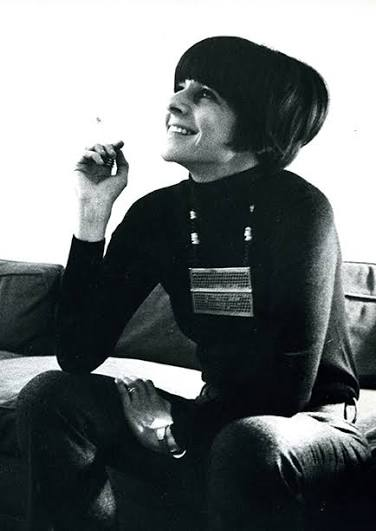
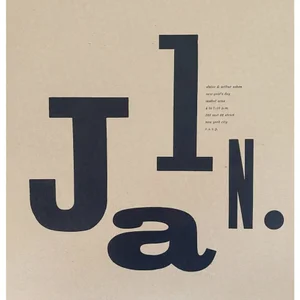
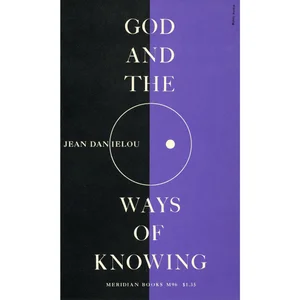
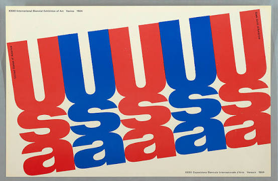
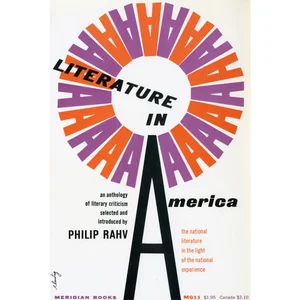

1927 — 2016
Biography
Artist · Graphic Designer · Pioneer of Modern Design
01 / The Beginning
Early Life
Elaine Lustig Cohen (1927–2016) was an American artist and graphic designer known for bold geometric designs and colorful artwork. She studied art at Sophie Newcomb College before earning a degree in art education from the University of Southern California in 1948. Her first husband, designer Alvin Lustig, introduced her to graphic design.




02 / Visual Communication
Graphic Design Career
After Alvin Lustig died in 1955, Cohen took over his design business and built a respected career of her own. She designed book covers, logos, signs, and catalogs for clients including the Jewish Museum, Meridian Books, and the 1964 World's Fair. She also designed signage for New York City's Seagram Building.
03 / A New Direction
Transition to Fine Art
In the late 1960s, Cohen shifted her focus to fine art. Her work developed from bold geometric shapes into playful compositions combining collage, photography, and typography. Her art was exhibited in galleries and museums throughout her career.


04 / Collecting & Discovery
Books and Collecting
In 1973, Cohen and her second husband, Arthur A. Cohen, opened Ex Libris, a rare bookstore specializing in modern art and architecture. The books and printed materials she collected inspired her artwork and encouraged her curiosity about history, literature, and design.
05 / Lasting Influence
Legacy
Cohen continued experimenting with different artistic techniques throughout her life. In 2018, the Jewish Museum honored her with an exhibition featuring her painting and graphic design. She is remembered for combining art, typography, and history in fresh and unexpected ways.